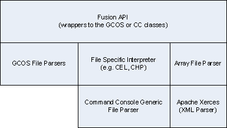

|
| INTRODUCTION | ||
|
The Fusion SDK provides source code for reading both GCOS 1.x and
Command Console data files. The way the SDK is organized is depicted in
the diagram below.  The GCOS files parsers are file specific as each data file has its own format. The Command Console (CC) Array file is an XML file. The XML parser used is the Apache Xerces software. The CC data files use the same flexible file format. This format contains information to describe the contents (#columns, data type in each column, etc.). A set of classes provide the ability to read any data file of this format, regardless of file extension. For existing files such as the CEL and CHP files which contain results generated by the current GCOS/GTYPE/GDAS software, file specific interpreters provide higher level interfaces. These interpreters make assumptions about the number of data groups, sets and column which the CC software will conform to. For assays that will write CHP files with newer data (such as the Tiling and ExACT software) the fusion layer will utilize the generic file parsers. The information below will describe how to read each data file type using the Fusion APIs. |
||
| ARRAY FILE | ||
|
The CC array file contains information about a GeneChip probe array and
end user attributes. The top level Fusion objects to use are FusionArrayFileReader and ArrayData. These classes will parse CC array files, MAGE-ML files generated by the DTT 1.1 software and EXP files. The workflow for reading the array file is:
|
||
| CEL FILE | ||
|
The CEL file contains intensity data organized by X/Y feature
coordinate. Included in the file is the name of the algorithm and the
parameters used to create the file. The top level Fusion object to use is FusionCELData. The workflow for reading a CEL file is:
Note: Use the CDF file to organize the data by probe set. | ||
| CHP FILE | ||
|
The CHP file contains the results from analyze intensity data in a CEL
file. For expression arrays this is the probe set results such as signal
and detection. For genotyping this is the allele calls and confidence
scores. Reading a CHP file involves several Fusion classes. To read the file use the FusionCHPData and FusionCHPDataReg classes.
To support the multitude of expected CHP file types, the CHP parser has been written using self registering classes with each self registered class providing the parsing capabilities for the specific CHP file type. The existing CHP parsers include:
Each of the above classes contains a function (FromBase) to convert the FusionCHPData object. An example of converting to the legacy class is:
The return object is NULL if the file is not an expression, genotyping, resequencing or tag CHP file (those data types supported by the FusionCHPLegacyData object). At this point you need to decide what to do. If your application reads expression data and you want to extract the signal values for each probe set then the workflow steps are:
Note: As of GCOS 1.0 the CEL intensities are no stored in the CHP file. Use the CEL parser to retrieve intensity information. | ||
| CDF FILE | ||
|
The CDF file provides a description of the array in terms of function of
the probes. The top level Fusion object to use is FusionCDFData. The workflow for reading a CDF file is:
Once you have a probe object you can determine if it is a PM or MM probe by examining the PBase and TBase. PM probes have PBase equal to the compliment of TBase, otherwise it is a MM probe. |